量子力学前三章 · 复习课
这门课的量子部分，闭卷考的是三份课件：概述、波函数和薛定谔方程、力学算符。教材用来把课件写到一半的模型补完。课件里没出现的推导，知道图像就行，不用背。
上一份《知识梳理》是公式字典，留着查，不要从那里开始读。这一份按考试顺序，一节只解决一件事。
0. 十条线，其实是一条
课程目标页写的三件事，对应的就是：说出和经典的差别；会用波函数和薛定谔方程；会算盒子这种简单模型。平时占 30%（考勤 10% + 随堂测验 20%），期末闭卷占 70%。
相对论在课件里只用来写光子的能量和动量。洛伦兹变换本身不考计算。
1. 黑体：能量不能一点一点地连续往外吐
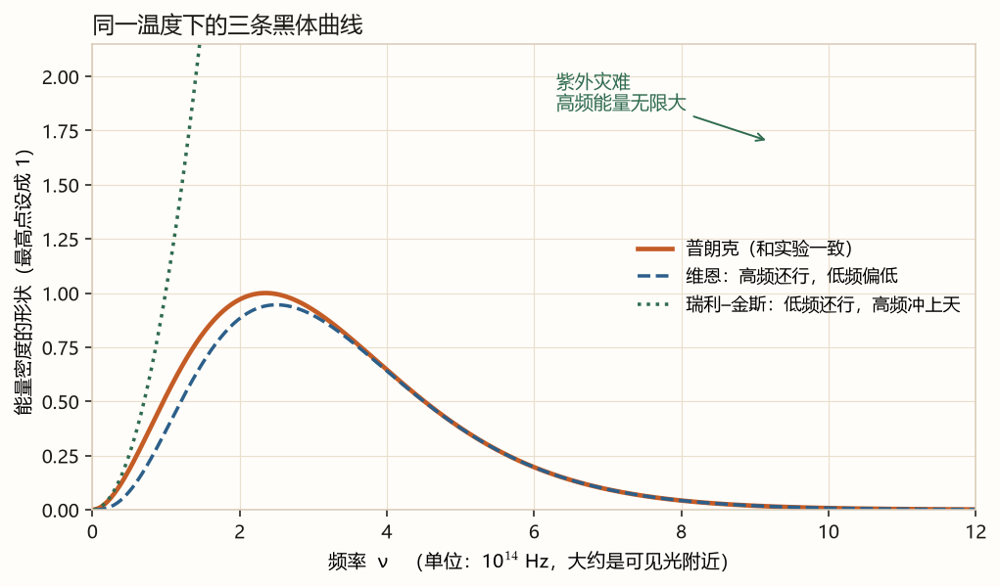
纵轴只比较形状。绿线在高频被截断了，否则会一直冲出图外。
19 世纪末有两条理论曲线，各对一半：
- 维恩：高频（短波）符合，低频偏低。它是靠实验凑的指数衰减，不是从电磁理论推出来的。
- 瑞利–金斯：低频符合。高频时每个“振动模式”仍分到一份热能，模式又越来越多，总能量变成无限大。这叫紫外灾难。
普朗克假设：频率为 $\nu$ 的光，发射和吸收的能量只能是 $h\nu$ 的整数倍，不能连续变化。$h\nu$ 叫能量子。由此得到和实验一致的公式（这是假设推出来的结果）：
高频时它退回维恩那种指数衰减；低频时 $\mathrm e^{x}-1\approx x$，退回瑞利–金斯。所以它是把两边接上，不是另画一条无关的曲线。
课件里的瑞利–金斯写成
维恩位移：峰值波长和温度成反比，$\lambda_{\max}T=b$，$b\approx 0.002898\,\mathrm{m\cdot K}$。炉子越热，最亮的颜色越往短波走。
记一句就够：凡是 $h$ 不能当成 0 的现象，就是量子现象。
自测：为什么高频时经典公式会爆？
高频的振动方式非常多，经典统计仍给每一种分到 $kT$。份数乘上一个越来越大的数目，能量就无限了。普朗克让高频的一份能量 $h\nu$ 很大，很难被激发，所以高频被压下去。
2. 光电效应：频率决定跑得有多快
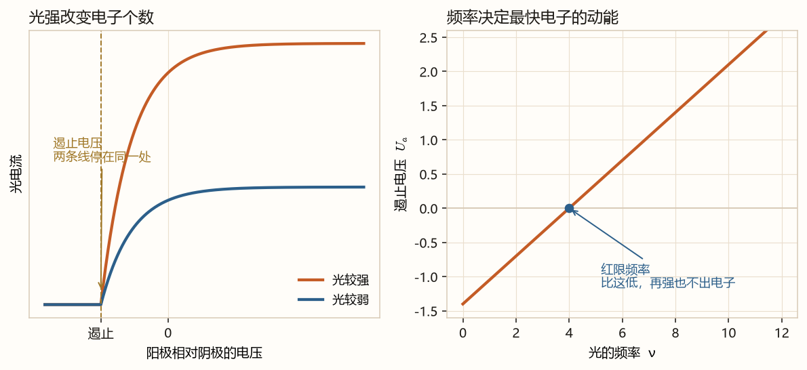
左图两条曲线停在同一个反向电压。右图直线和横轴的交点就是红限。
实验把四件事钉死了：
- 光越强，饱和电流越大。单位时间打出的电子越多。
- 加反向电压，电流会变成零。这个遏止电压和光强无关，所以最快电子的动能和光强无关。
- 遏止电压和频率是直线。频率低于红限，光再强也打不出电子。
- 从照光到出电子，不超过大约 $10^{-9}\,\mathrm s$，没有“慢慢攒能量”的等待。
最快电子的动能等于它刚好爬不过去的那个反向电压：
直线是 $U_a=K\nu-U_0$。红限频率 $\nu_0=U_0/K$。
爱因斯坦把普朗克的 $h\nu$ 看成一颗颗光子。一个电子吸收一个光子，先支付逸出功 $W_0$，剩下的才是动能（这是假设）：
和直线对照：$K=h/e$，$W_0=eU_0$，$\nu_0=W_0/h$。光强只增加光子个数，所以只增加电子个数。
- 红限：$\nu_0=U_0/K$。频率比这低，动能为负，没有电子出来。
- 频率为 $\nu$ 时，遏止电压 $U_a=K\nu-U_0$。
- 最大动能 $=eU_a=h\nu-W_0$。不要把光强代进这个式子。
自测：把光增强一倍，红限变不变？饱和电流变不变？
红限不变，它只由金属的逸出功决定。饱和电流变大，因为光子多了，打出的电子多了。
3. 光子带有动量，撞上电子波长会变
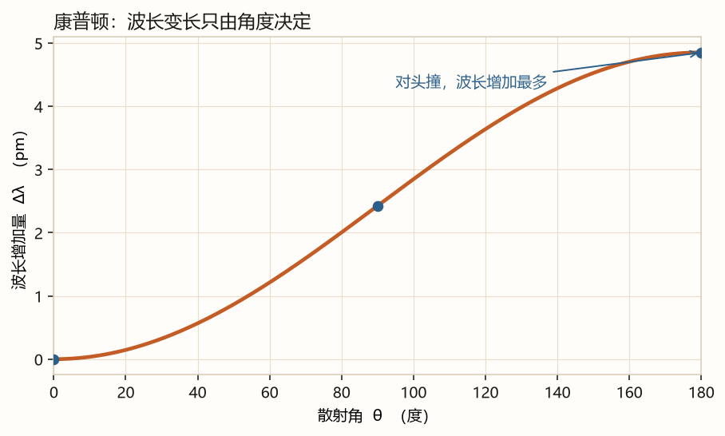
光子没有静止质量，能量和动量的关系是 $E=cp$。再写上 $E=h\nu$（定义，用了相对论）：
X 射线打在轻原子的电子上，散开以后波长变长。经典电磁波散射不该变波长。把它看成光子和静止电子的碰撞，能量守恒、动量守恒，消掉电子的速度和飞出方向，得到（推出来的）：
$\theta=0$ 时波长不变；$\theta=180^\circ$ 时增加最多，增加 $2h/(m_0 c)$。变化量和入射波长无关。$h/(m_0 c)$ 大约是 $2.43\,\mathrm{pm}$。
另一个等价写法是 $\Delta\lambda=\dfrac{4\pi\hbar}{m_0 c}\sin^2\dfrac\theta2$。因为 $1-\cos\theta=2\sin^2(\theta/2)$，而 $4\pi\hbar=2h$。
自测：散射角 90° 时，波长增加多少？
$1-\cos 90^\circ=1$，所以 $\Delta\lambda=h/(m_0 c)$，大约 2.43 pm。
4. 氢原子的光是一条一条的
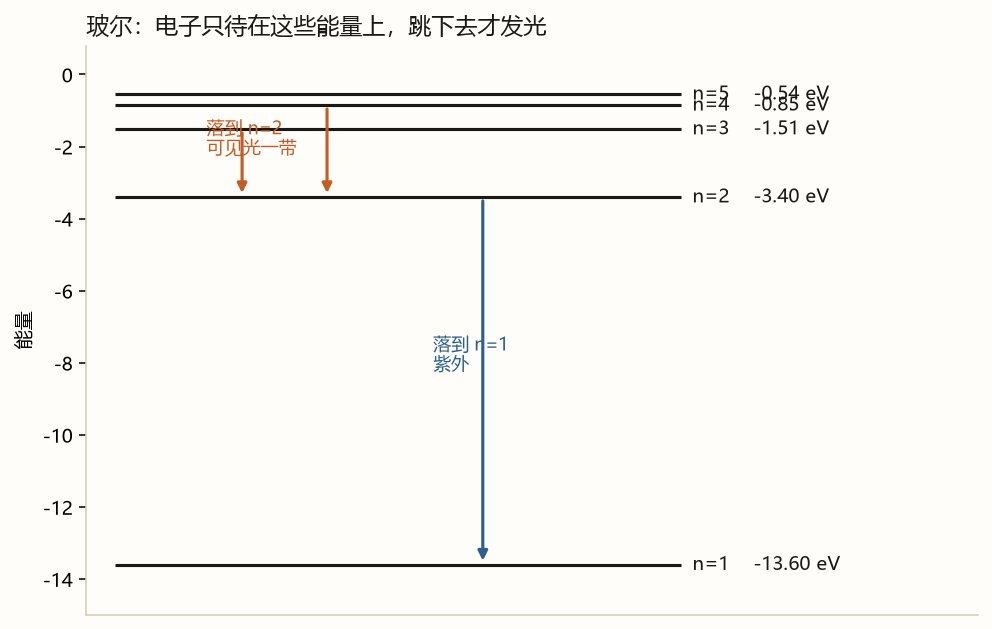
巴耳末把氢光谱收成一个经验公式：
$n'=2$ 落到第 2 层，是可见光那一组；$n'=1$ 落到第 1 层，在紫外。课件强调：所有谱线的波数都能写成两项相减。有 $\nu_1$ 和 $\nu_2$，常常还有它们的和或差。这叫并合原则，不是“基频的整数倍”。
玻尔用三条假设解释这件事：
- 定态。 电子只待在某些轨道上，待着的时候不发光。
- 跃迁。 从能量 $E_n$ 跳到 $E_{n'}$，放出或吸收一个光子，$h\nu=|E_n-E_{n'}|$。
- 角动量量子化。 $L=n\hbar$，$n=1,2,3,\ldots$。课件用圆周上的驻波 $2\pi r=n\lambda$ 推出这一条，最后是 $n\hbar$，不是 $nh$。
氢原子能级 $E_n=-13.6\,\mathrm{eV}/n^2$。$n=1$ 最低，是负的，因为零点选在电子离核无限远的地方。
课件里的选择定则只记到这一句：有些能级之间不满足角动量那条规则，不能通过吸收或放出一个光子跳过去，叫禁止跃迁。具体计算不在这三章。
自测：从 n=3 落到 n=2，光子频率用哪两个数？
$\nu=R_\infty c(1/2^2-1/3^2)=R_\infty c(1/4-1/9)=R_\infty c\cdot 5/36$。能量差是 $|E_3-E_2|$，再除以 $h$ 得到同一个频率。
5. 电子也有波长
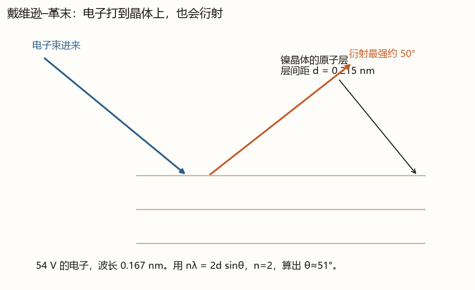
戴维逊–革末把这件事做成了实验。54 V 加速的电子，波长 $\lambda=0.167\,\mathrm{nm}$。镍的原子层间距 $d=0.215\,\mathrm{nm}$。晶体衍射用
加速电压和波长的关系：动能 $\frac12 mv^2=eV$，所以 $p=\sqrt{2meV}$，$\lambda=h/p$。电压越高，电子越快，波长越短。
自测：同一个电子，速度变大，波长变长还是变短？
变短。动量大，波长小。
6. 波函数：在哪里更容易找到它
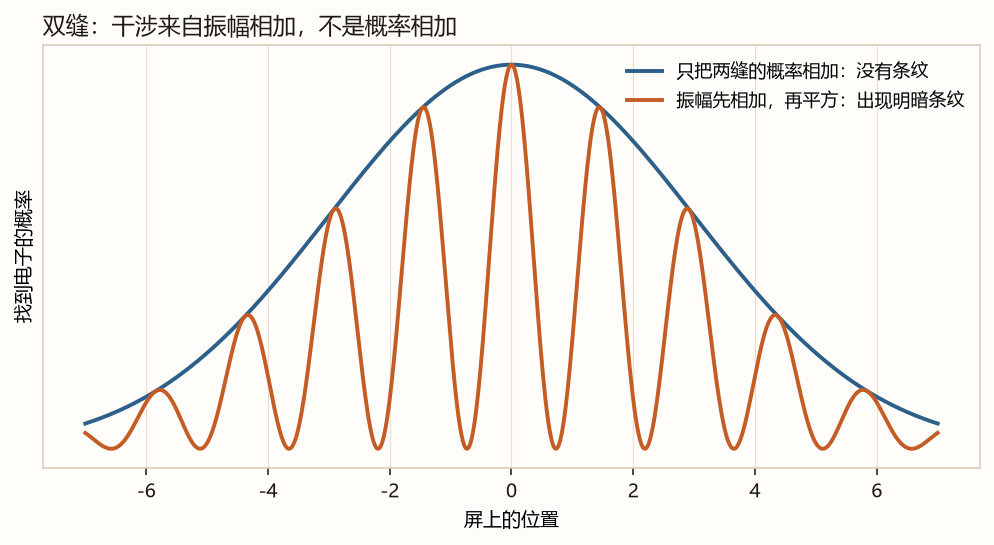
玻恩的解释（假设）：$|\Psi|^2\mathrm dV$ 是在那一小块体积里找到粒子的概率。$|\Psi|^2$ 叫概率密度。粒子总得在某处，所以
这叫归一化。还没归一的函数先算积分，再除以它的平方根。再乘 $\mathrm e^{i\delta}$（$\delta$ 是实数）不改变概率，因为这个因子的模是 1。它叫相因子，乘上去仍是同一个态。
标准条件先记三条：波函数在所讨论的区域里有限、连续、单值。束缚态还要在无穷远处变成 0。
- 归一化：$\int_0^a A^2\sin^2(\pi x/a)\,\mathrm dx=1$。$\sin^2$ 在整数个半波上的平均是 $1/2$，积分等于 $A^2\cdot a/2$。所以 $A=\sqrt{2/a}$（取正）。
- 概率密度 $(2/a)\sin^2(\pi x/a)$，在 $x=a/2$ 最大。
- $0$ 到 $a/2$ 正好是半个拱，概率是 $1/2$。
- 位置平均值 $\bar x=\int_0^a x|\psi|^2\mathrm dx=a/2$。左右对称，不用硬算也能看出来。
- $\overline{x^2}=a^2/3-a^2/(2\pi^2)$。这一条是积分结果，考试若给出 $\psi$，按 $\int x^2|\psi|^2\mathrm dx$ 去算。
高斯型 $\psi=A\exp(-\frac12 a^2 x^2-\mathrm i\omega t/2)$：归一化 $A=(a^2/\pi)^{1/4}$，概率在 $x=0$ 最大。时间只出现在相因子里，所以概率分布不随时间变。
自由粒子平面波 $|\psi|^2$ 是常数，全空间积分是无限大，不能按上面的办法归一。改用 $\delta$ 函数归一以后，一维的系数是 $A=(2\pi\hbar)^{-1/2}$。考试若只问“为什么不能普通归一”，答到积分发散即可。
自测：把波函数乘 3，概率变不变？
没有归一化之前，各点的相对概率不变，仍是同一个态。归一化时会把这个 3 除回去。真正改变概率形状的是函数形式，不是整体乘一个常数。
7. 状态怎样随时间变
这个方程要满足两件事，否则和前面冲突：它是线性的，这样叠加起来的态也是解；系数里不能再出现某一个态才有的 $E$ 或 $p$，否则别的态用不了。
建立的路子是凑，然后当成假设：
- 自由粒子写成复数平面波 $\Psi=A\exp[\mathrm i(\mathbf p\cdot\mathbf r-Et)/\hbar]$。
- 对时间求导，得到 $\mathrm i\hbar\,\partial\Psi/\partial t=E\Psi$。
- 对空间求两次导，得到 $-\hbar^2\nabla^2\Psi=p^2\Psi$。
- 自由粒子 $E=p^2/(2m)$。用它把 $E$ 和 $p$ 换成对波函数的运算，方程里就不再出现 $E$ 和 $p$。
对应规则（还不是测量理论）：
有势能时，经典关系是 $E=p^2/(2m)+U$。同样替换，得到薛定谔方程：
时间导数必须是一阶的。因为实验只准备好某一时刻的 $\Psi$，方程只要能从这一份出发往后走。
概率不会无中生有。定义概率流
就有 $\partial w/\partial t+\nabla\cdot\mathbf J=0$。某一块区域里的概率变少，是因为概率从边界流出去了。这是方程的推论，不是另一条假设。全空间积分之后，归一化一旦成立就一直成立。
定态
势能 $U$ 不含时间时，可以找一种特解：空间部分和时间部分分开。时间部分是
空间部分满足定态方程
方括号里的运算叫哈密顿算符 $\hat H$，也叫能量算符。上式就是 $\hat H\psi=E\psi$。
$|\Psi|^2=|\psi|^2$，时间因子消掉了，所以概率密度和概率流都不随时间变。能量是确定的。但不要说“定态波函数不含时间”。它含，只是概率看不出来。
一般状态是许多定态叠在一起。叠了不同能量以后，概率密度可以随时间变，那就是干涉项。
自测：定态的波函数乘上时间因子以后，概率为什么不变？
时间因子的模是 1，它和自己的共轭相乘得 1，所以 $|\Psi|^2=|\psi|^2$。
8. 关在盒子里，能量变成一档一档
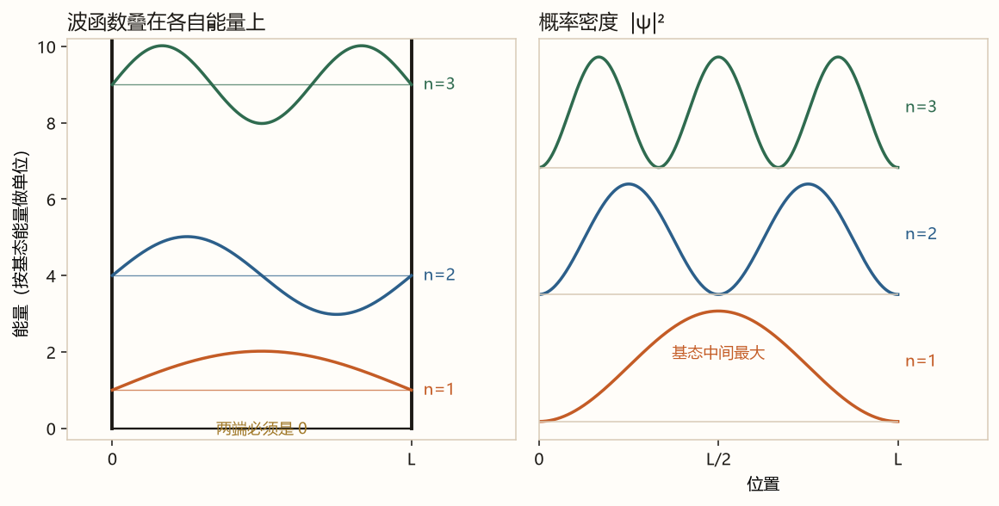
左图把波形竖着叠在各自的能量上，方便看节点。右图是概率。$n$ 越大，概率的拱越多，能量按 $n^2$ 升高。
课件把盒子写成 $0\le x\le L$，外面波函数是 0。四步：
- 里面：$-\dfrac{\hbar^2}{2m}\psi''=E\psi$。令 $k=\sqrt{2mE}/\hbar$，解是 $\sin$ 和 $\cos$ 的组合。
- $\psi(0)=0$ 把 $\cos$ 去掉，只剩 $\sin(kx)$。
- $\psi(L)=0$ 要求 $kL=n\pi$，$n=1,2,3,\ldots$。$n=0$ 会使波函数处处是 0，扔掉。
- 归一化得到系数 $\sqrt{2/L}$。
教材例题把宽度写成 $a$，把 $L$ 换成 $a$ 即可。基态 $n=1$ 的能量不是 0。
$n$ 号波函数在盒子里有 $n-1$ 个节点（不把两端算进去）。概率在波节处是 0，粒子在那些点附近很少出现，但能量仍然是确定的。
含时间的定态是 $\Psi_n=\psi_n\mathrm e^{-\mathrm i E_n t/\hbar}$。它可以看成两列反向跑的波叠成的驻波，概率流是 0：概率在拱里晃，并不整体流向一边。
自测：盒子宽度变成原来的 2 倍，基态能量变成原来的几倍？
$E$ 和 $L^2$ 成反比，所以变成 $1/4$。粒子更“松”，最低能量更低。
9. 弹簧：最低能量也不是零
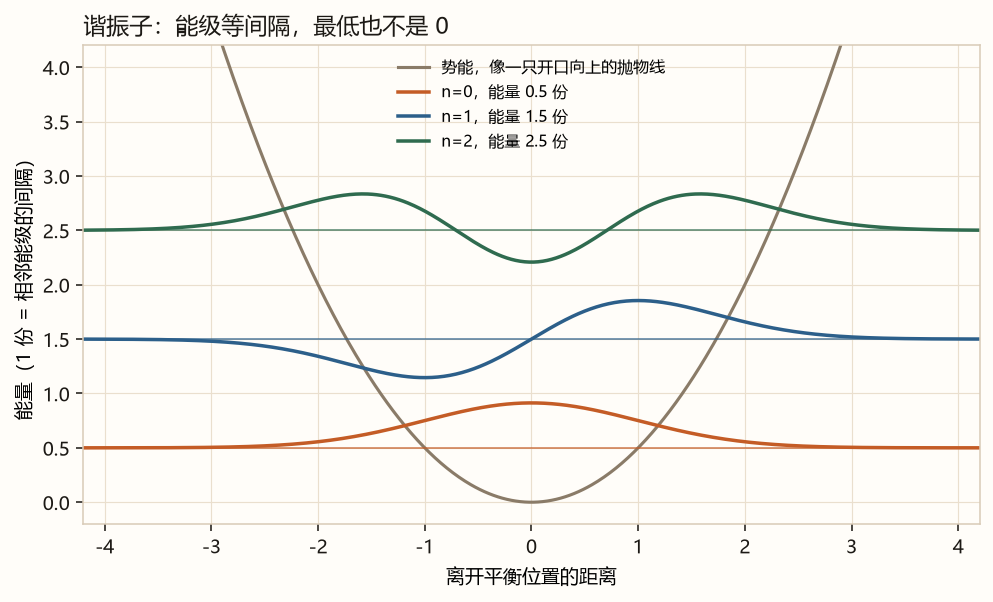
图上的“1 份”就是 $\hbar\omega$。最低是半份，往上每一档多一份。波形叠在能量线上，只为了看节点。
要求无穷远处波函数变成 0，能级被卡成（推出来的）
间隔都是 $\hbar\omega$。最低的一份 $\frac12\hbar\omega$ 叫零点能。经典弹簧可以完全停住，能量是 0。这里不行。
$n$ 为偶数时波函数是偶函数，奇数时是奇函数。节点个数就是 $n$。
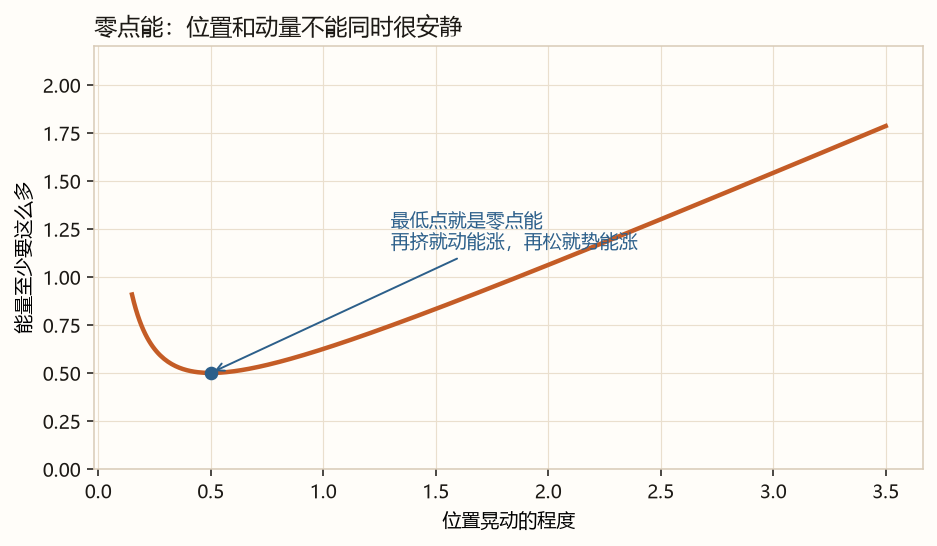
横轴是位置晃动的大小。太挤，动量就猛，动能高；太松，弹簧拉得远，势能高。最低点是零点能。
- 平均能量 $=\overline{p^2}/(2m)+\frac12 m\omega^2\overline{x^2}$。
- 基态左右对称，$\bar x=0$，$\bar p=0$。于是 $\overline{x^2}$ 就是位置的不确定程度，$\overline{p^2}$ 就是动量的。
- 不确定关系：两者相乘至少是 $\hbar^2/4$。取等号，能量变成“一个量 + 它的倒数”。
- 对这个量求最小，得到 $\frac12\hbar\omega$。
自测：盒子的基态能量，是不是也等于 ½ℏω？
不是。盒子的基态是 $\pi^2\hbar^2/(2mL^2)$。$\frac12\hbar\omega$ 只属于这种抛物线势能。
10. 能量不够，仍可能出现在墙的另一边
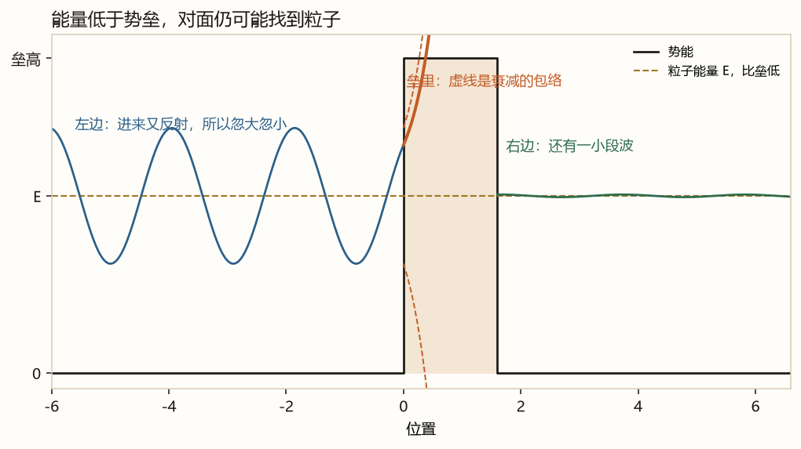
左边的波有进有回，所以幅度忽大忽小。进垒以后包络很快下降。右边还剩一小段，所以对面找得到粒子。纵轴把波形画在能量线附近，不是把波函数的数值当成能量。
方势垒：中间一段高度 $U_0$、宽度 $a$，两边势能是 0。$E>U_0$ 时也有反射，透射概率还随宽度振荡。考试更常问的是 $E<U_0$。
垒又高又宽时，透射系数近似成
$D_0$ 是数量级为 1 的数。指数里那一截越大，$D$ 越小。电子、垒高几个电子伏、宽度 1 nm 时，透过还明显；宽到 10 nm 就极小。所以宏观物体看不到这件事。
形状不规则的垒，把指数里的 $a\sqrt{U_0-E}$ 换成积分 $\int\sqrt{2m(U-E)}\,\mathrm dx$。会用这个指数即可。
另一种课件和教材都会碰到的是尖针一样的势，$U=A\delta(x-a)$。透射系数
$A$ 有限、$E$ 不是零，$T$ 就不是零。波函数连续，导数跳一下。
自测：把粒子质量加大，同样的垒，更不容易透过还是更容易？
更不容易。指数里有 $\sqrt{m}$，质量大，指数更负。
11. 测量：一次只得到允许的那些数
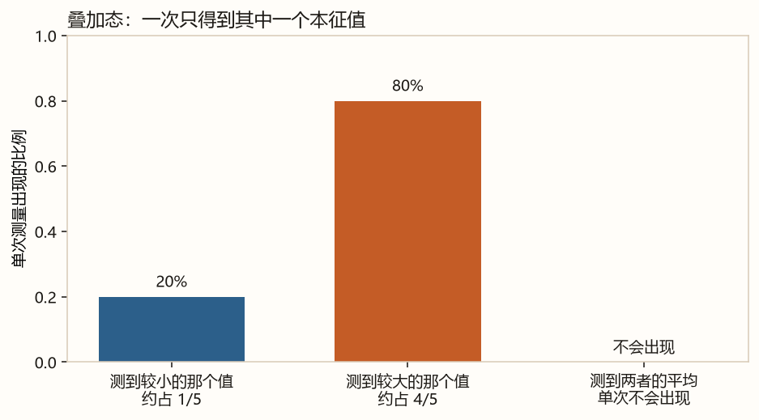
这是课件那道叠加题的结果：一次测量不会得到平均值。平均值是很多次的平均。
动量算符 $\hat{\mathbf p}=-i\hbar\nabla$。动能是 $\hat p^2/(2m)$。能量算符就是前面的 $\hat H$。
课件前半有梯度、散度、旋度，是为了会写 $\nabla$。那个 $\nabla$ 和能量算符 $\hat H$ 只是中文都叫过“哈密顿”，不是同一个东西。若题目给一个具体矢量场让你求旋度，就按定义对每个分量求导，不要背某一页上有争议的那个终点数字。
五个基本假设，其实就是把前面收成五句：
- 状态用波函数描写。
- 力学量用线性厄米算符描写。
- 测量只得到本征值。$\psi=\sum c_n\phi_n$ 时，得到 $\lambda_n$ 的概率是 $|c_n|^2$（已归一）。
- 平均值 $\overline F=\int\psi^{*}\hat F\psi\,\mathrm dV$。它可以不是任何一个本征值。
- 状态怎样变，由薛定谔方程规定。
- 两个分量的 $L^2$ 本征值不同，一个是 $2\hbar^2$，一个是 $6\hbar^2$。所以这不是 $L^2$ 的本征态。
- 两个的 $L_z$ 都是 $\hbar$。测 $L_z$ 只得到 $\hbar$。
- 系数平方是 $1/9$ 和 $4/9$，加起来是 $5/9$。除掉以后，概率是 $1/5$ 和 $4/5$。
- $\langle L^2\rangle=\frac15\cdot 2\hbar^2+\frac45\cdot 6\hbar^2=\frac{26}{5}\hbar^2$。这是平均值，单次测不到它。
要唯一标定一个态，需要一组两两对易的力学量，个数一般等于自由度。例子：自由粒子用 $p_x,p_y,p_z$；一维谐振子只用 $H$；氢原子用 $H$、$L^2$、$L_z$。氢原子那一组里 $H$ 有简并也没关系，三个数合在一起仍能定死一个态。
$\delta$ 函数只记用法：$\int f(x)\delta(x-x_0)\mathrm dx=f(x_0)$，以及 $\delta(ax)=\delta(x)/|a|$。课件练习 $\int f(x)\delta(-2x+4)\mathrm dx$。先写成 $\delta(-2(x-2))=\delta(x-2)/2$，结果是 $f(2)/2$。页上没印答案，这是用这条性质算的。
自测：一次测量得到了平均值，这种说法错在哪？
一次测量得到的是某一个本征值。平均值是大量相同实验的算术平均，可以落在两个本征值之间。
12. 两个量什么时候能同时有确定值
最重要的一个（直接算出来的）：
算法：$\hat p_x=-i\hbar d/dx$，作用在任意函数 $f$ 上，
$x$ 和 $p_y$ 对易，各方向的动量彼此对易。$[A,B]=0$ 且 $[B,C]=0$，不能推出 $[A,C]=0$。
若 $[\hat F,\hat G]=i\hat k$，不确定关系是
用于位置和动量，就是 $\Delta x\,\Delta p_x\ge\hbar/2$。它不是“测量把粒子碰乱了”才出现的，态一旦给定，这两个晃动的乘积就不能再小。
角动量：$[L_x,L_y]=i\hbar L_z$。在 $Y_{lm}$ 上，$\langle L_x\rangle=\langle L_y\rangle=0$，
若把下限写成 $\frac12 m\hbar^2$，这里的 $m$ 若是负数，要理解成 $|m|$。
什么量守恒
平均值随时间的变化（推出来的）：
不显含时间，又和 $\hat H$ 对易，平均值就不随时间变。这样的量叫运动恒量。四个例子：
- 自由粒子的动量。没有外力，$\hat H=\hat p^2/(2m)$，和 $\hat p$ 对易。
- 中心力场里的角动量。势能只跟 $r$ 有关。
- 能量本身。$\hat H$ 不显含时间。
- 宇称。势能左右对称时，波函数可以选成偶的或奇的，而且这种偶奇性不随时间变。
自测：一个量不显含时间，它的平均值就一定不变吗？
不一定。还要和 $\hat H$ 对易。位置不显含时间，但 $[x,H]$ 一般不是 0，所以 $\bar x$ 可以随时间变。
课件没让你默写、知道图像即可
- 氢原子完整的径向波函数。考试若问到，用的是玻尔能级和“$H$、$L^2$、$L_z$ 合在一起标定一个态”，不是背 $R_{32}$。
- 谐振子的厄米多项式。会用能级和零点能的估计。
- 势垒透射系数那个带 $\sin$ 的长分式。会用高而宽时的指数，并会解释图。
- 均匀磁场里电子能级、导体平面上方的电子、三个函数的正交化。这些是教材例题。等你把上面十二节做顺，再按题号回来看字典，不提前做成模拟卷。
旧稿里标过“假设 / 定义 / 推出来的”，查公式时以那份为准。若某一式和课件原页不一致，以课件原页为准，告诉我页码即可。